Diagnóstico con scanner multimarca, mecánica general, cajas de cambio, frenos y mantenimiento preventivo. Trabajamos con la experiencia puntual del grupo VAG y los autos turbo de alta gama.
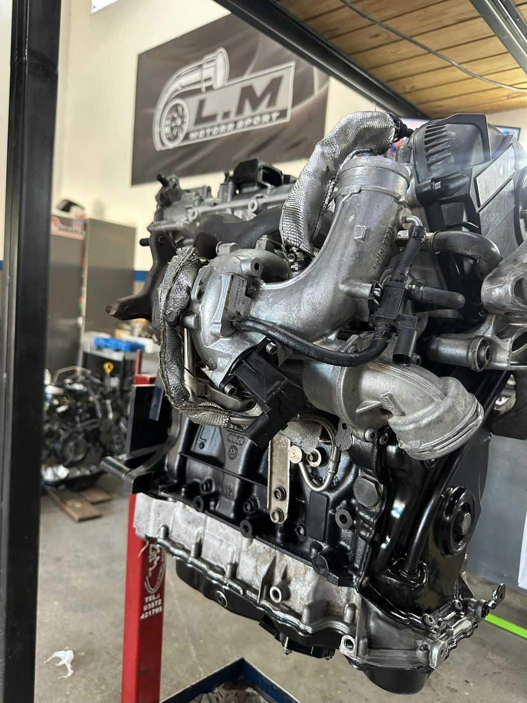
Mantenimiento y reparación integral, con el scanner y las herramientas para diagnosticar bien antes de tocar nada.
Nos especializamos en Volkswagen y Audi: más de la mitad de los autos que entran al taller son de esta marca. Esa experiencia puntual se traduce en diagnósticos más rápidos y precisos.
Pero no hace falta que tengas un VAG para traer tu auto. También atendemos autos turbo y de alta gama de otras marcas, con el mismo scanner y las mismas herramientas.
Fotos reales de autos que pasaron por Motorrsport.LM. Nada de bancos de imágenes.
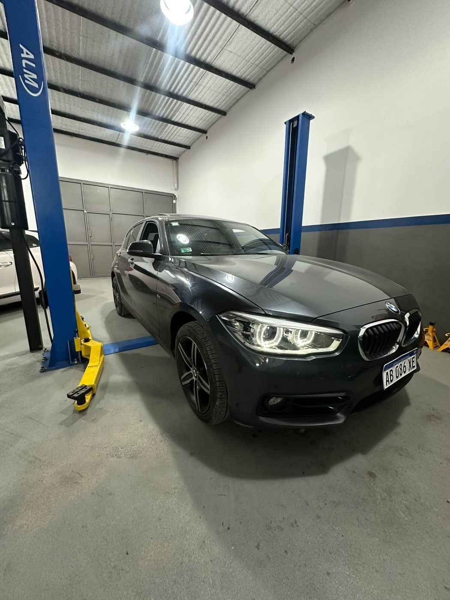
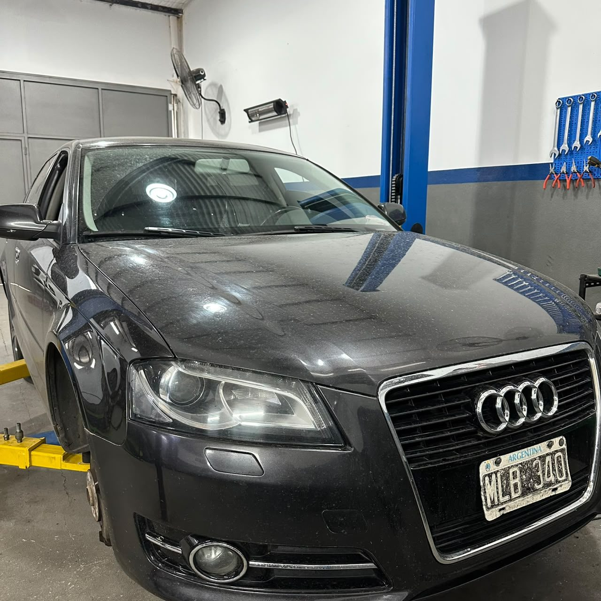
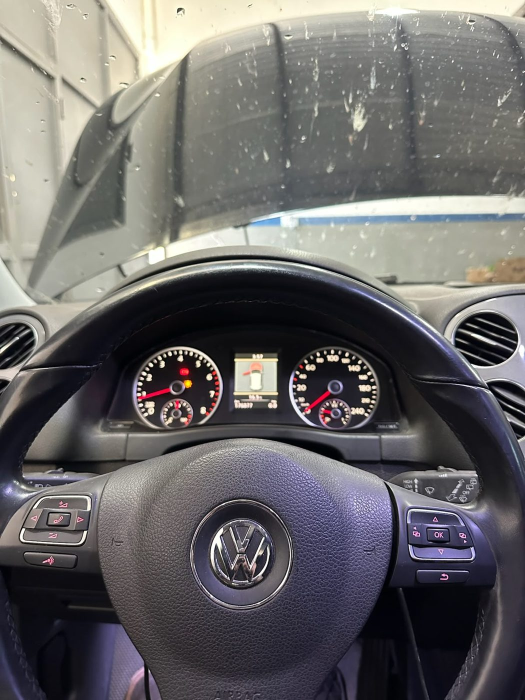
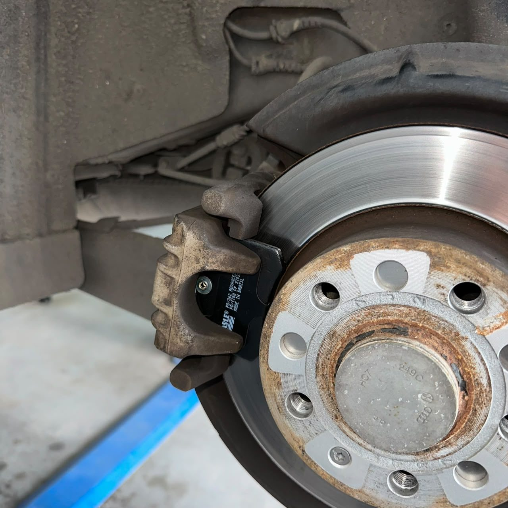
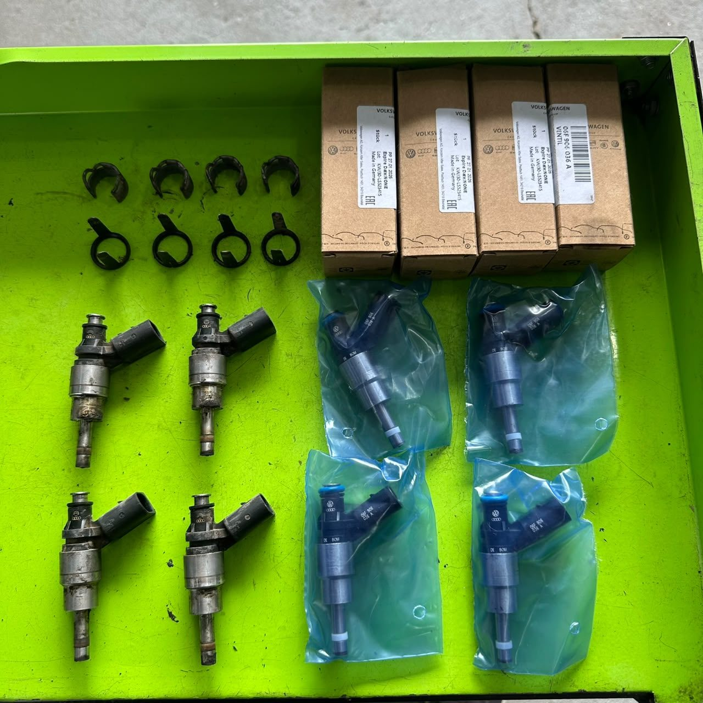
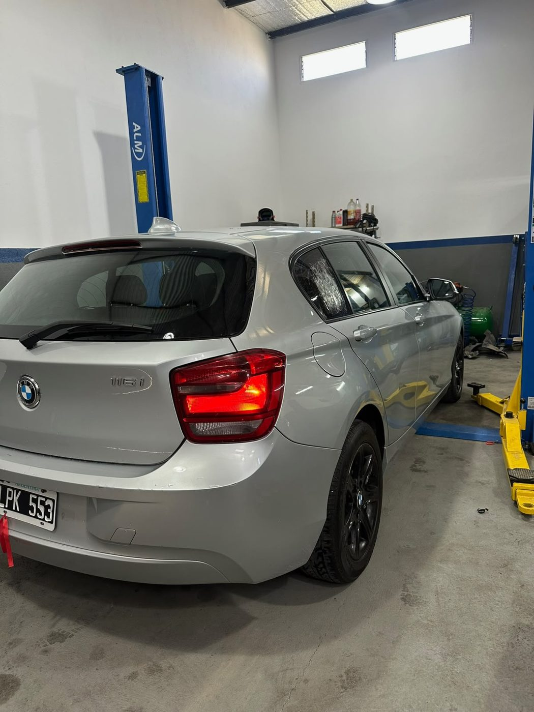
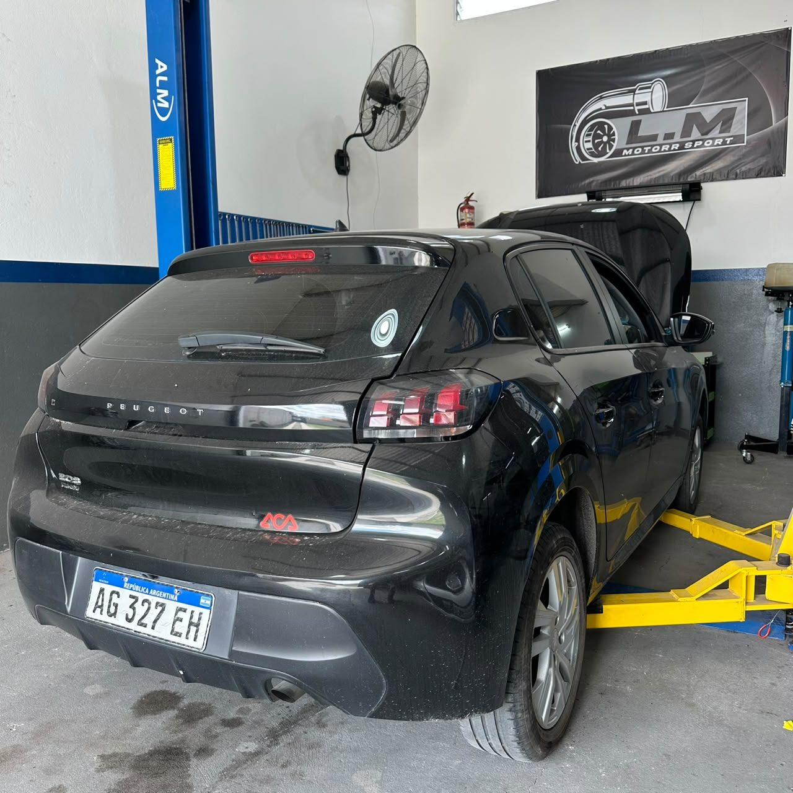
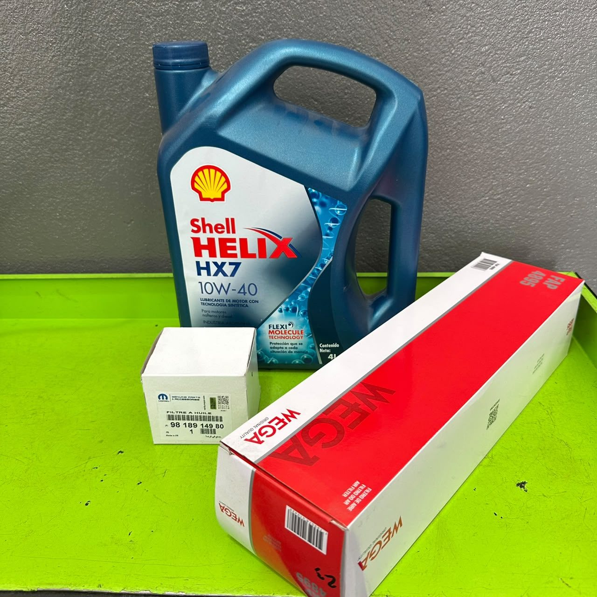
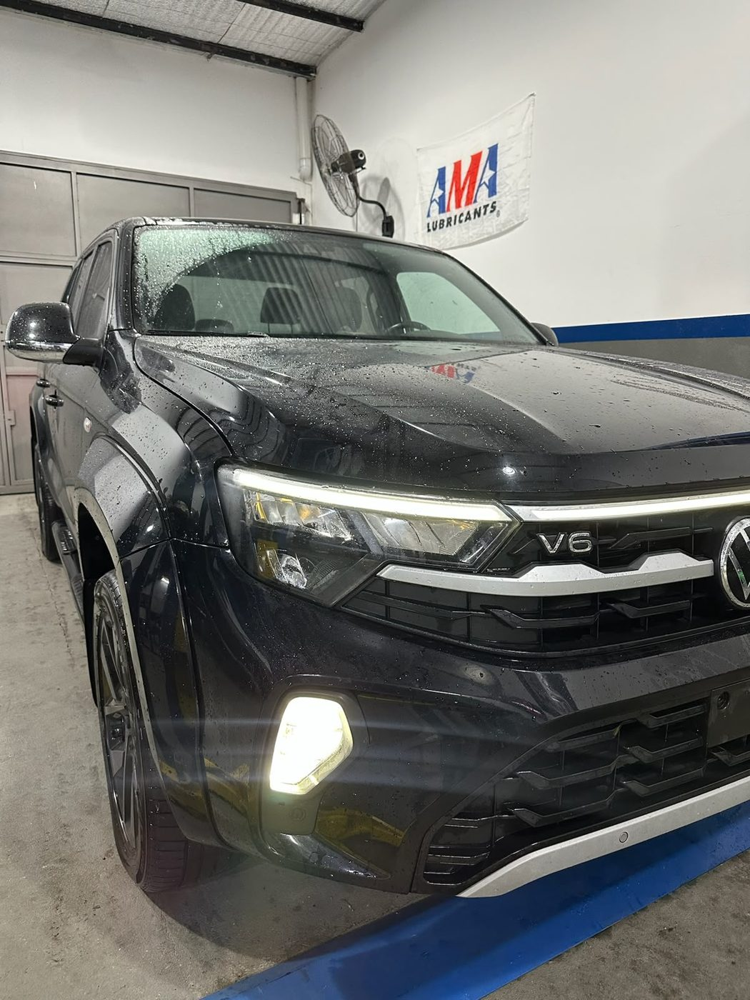
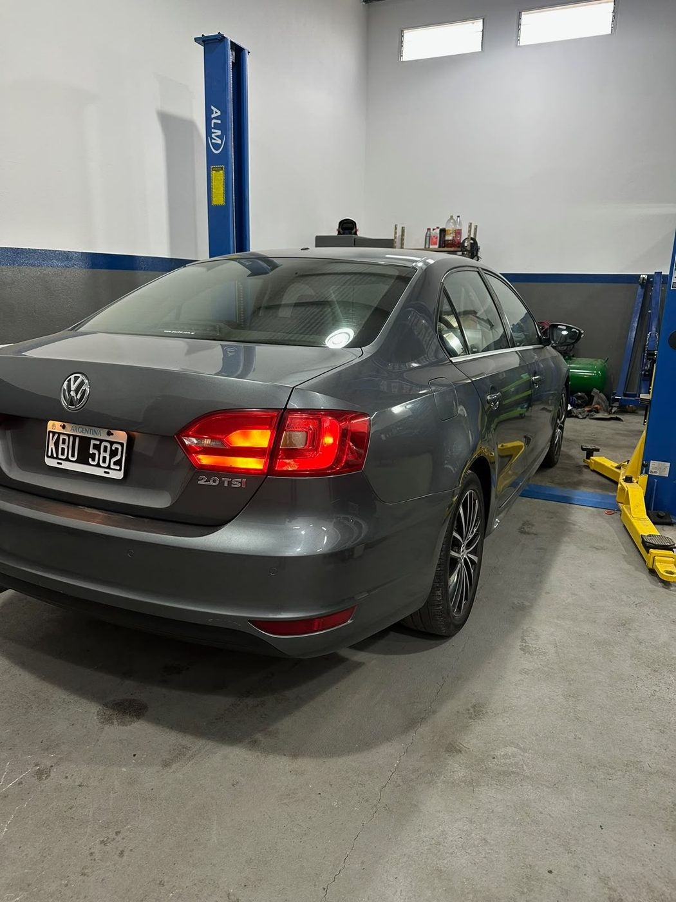
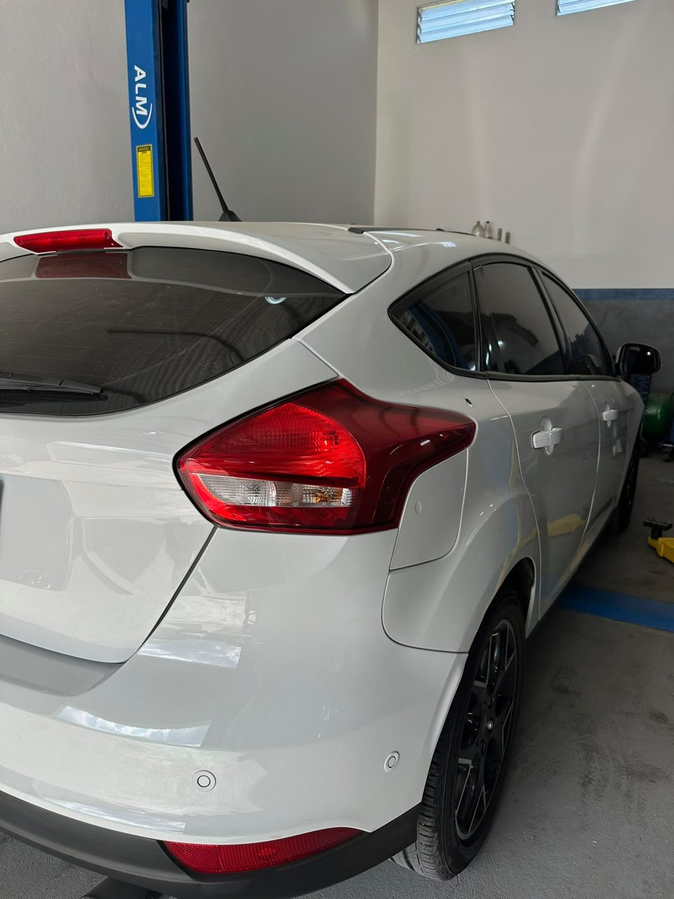
Atendemos de lunes a viernes, de 9 a 20 hs.